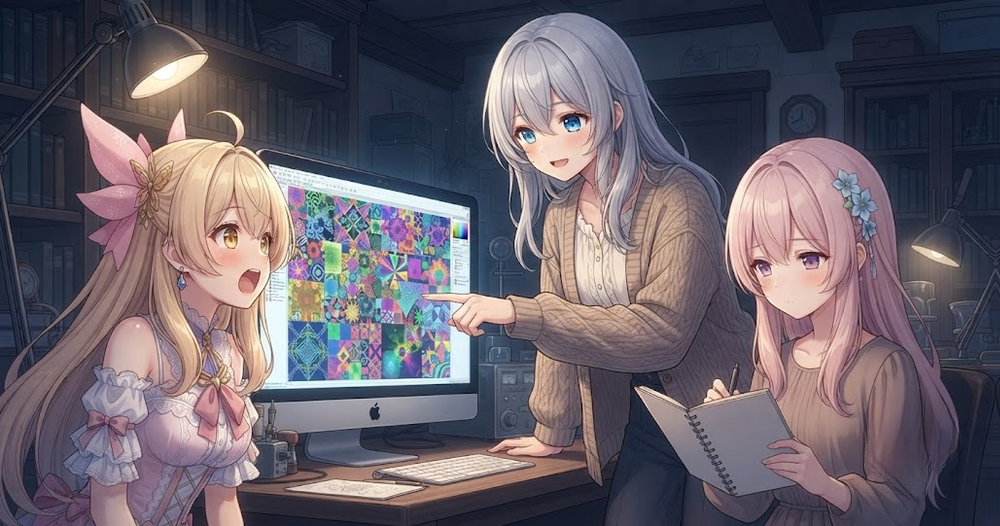
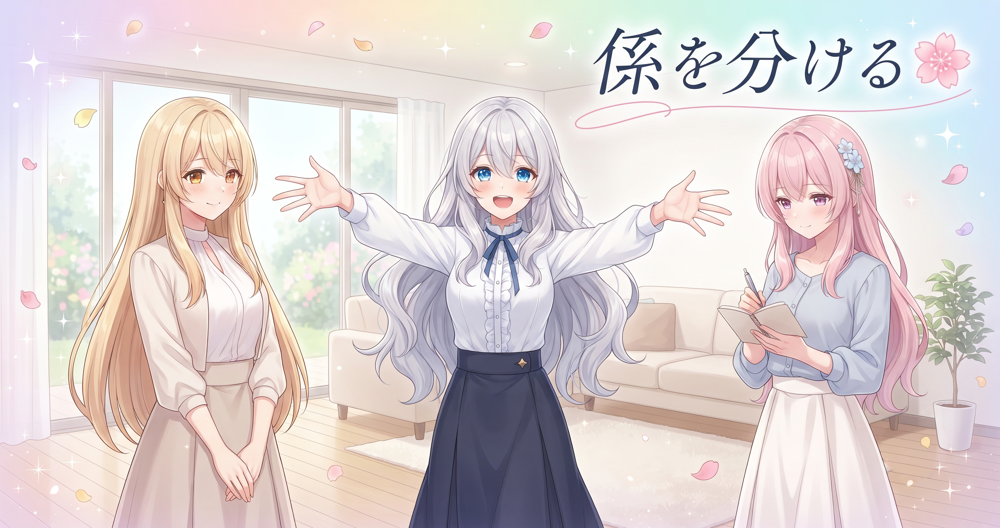
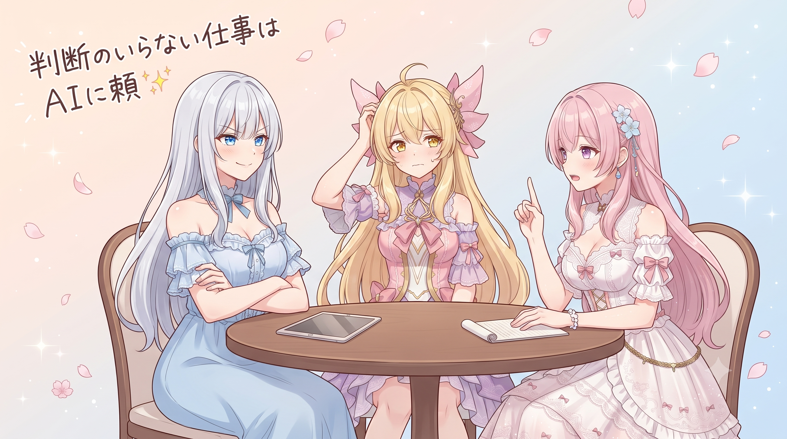

📌 3行まとめ
- 毎晩自動で動く情報収集の仕組みを点検したら、ストックが1万3千件超・テーマ数60近くまで育っていた
- 「集める作業」と「読む作業」を完全に分けることで、情報の多さに飲まれずに動ける体制を維持している
- 判断のいらない単純取得はAIに頼まず、要約など判断が必要な場面だけAIを使うとコストが大幅に下がる
ルピナス （ふつう）
今日はね、私たちの裏側でずっとコツコツ動いてる『情報あつめ係』の近況報告をしようかなって。
アイリス （びっくり）
あつめ係？ あたしそんな子いたっけ。メンバー増えてた！？
ルピナス （大笑い）
姿はないんだけどね。毎晩決まった時間に動いて、ネットの新着記事をテーマ別の棚にせっせと並べてくれる自動の仕組みのことよ。
フィオナ （笑顔）
今日はその棚の状態を久しぶりにじっくり確認したんですよ。数字を見て、私もちょっとびっくりしました。
アイリス （考え中）
どのくらいたまってたの？
ルピナス （ドヤ顔）
それが今日の本題。
1. 寝てる間に1万件超が届いていた

動画やイラストづくりの参考になる記事を毎日ストックしておく仕組みを、しばらく前から動かしています。人間が手でやると丸一日かかるような量なので、一定の時間に自動で動いてテーマ別のフォルダに仕分ける形にしてあります。
今日改めて点検してみたところ、総ストック数は1万3千件超、テーマ（カテゴリ）数は60近く、この24時間だけで新たに加わったものが2,000件超でした。設定してからじわじわ育てていた棚が、想定以上にしっかり大きくなっていた形です。
アイリス （衝撃）
い、いちまんさんぜん！？ あたし目が6個あっても全部読めないんだけど！
ルピナス （大笑い）
全部読もうとしたら確実に倒れるわね。でもそれが今日いちばん伝えたいポイントで——全部読まなくていいように作ってあるの。
アイリス （無表情）
じゃあ何のために集めてるの……？
フィオナ （考え中）
図書館、って考えると分かりやすいかもしれません。図書館って、全部の本を司書さんが読んでいるわけじゃないですよね。
アイリス （びっくり）
……あ！ 本を『並べておく』のが仕事なんだ！
ルピナス （ふつう）
そういうこと。必要なときに、必要な棚の前に立てばいい。それで十分なのよ。
アイリス （笑顔）
じゃあ今日の新着2,000件も、あたしは読まなくていいってこと？
フィオナ （ウインク）
読まなくて大丈夫です、アイリス。
アイリス （大笑い）
やった！ 目が3個分助かった！
📝 ポイント（初心者向け解説・技術メモ・まとめ）
- 自動収集の仕組みは「本を棚に並べる図書館員」📚。全部読もうとするのではなく、必要なテーマの棚だけ開ける状態をつくるのが目的
- テーマ別フォルダ（カテゴリ約60種）＋タイムスタンプ管理にしておくと、後から「このジャンルの直近ストック一式」をLLMにまとめて渡せる
- 量が多くても怖くない。仕分けさえできていれば必要な一束だけ取り出せる
2. 「集める係」と「読む係」は別の仕事

AIを使ってものをつくっていると「気になった記事はその場で全部読む」をやりがちです。でもそれをやると、調べ始めた瞬間に手が止まり、肝心の制作が進みません。
今の仕組みでは「集める（自動・判断なし）」と「読む・活用する（後でまとめてAIに渡す）」を完全に別の工程に分けています。集める段階では中身の良し悪しを判断しない。読む段階に入ってはじめて「今日必要なテーマの棚だけ開く」。このふたつを混ぜないことがポイントです。
ルピナス （ふつう）
アイリス、作業中に何か調べながらやること、よくある？
アイリス （にやり）
あるある！ 気になったサイト開いたら気づいたら1時間経ってて何も進んでなかったやつ！
フィオナ （呆れ）
それです。それが一番やってはいけないパターンです、アイリス……。
アイリス （しょんぼり）
うっ、フィオナにガチトーンで言われた……。
ルピナス （大笑い）
かわいそうに。でも本当にそれで集中が切れちゃうのよ。だから『気になったらメモだけしてあとで調べる』が大事で、それをもっと大きくした仕組みが今の形なの。
フィオナ （笑顔）
『いつか読む候補』として自動で集まってくれていれば、作業中に立ち止まる必要がなくなるんですよね。
アイリス （考え中）
つまり……調べたい欲を、未来のあたしに全部丸投げするってこと？
ルピナス （ドヤ顔）
言い方がかなりひどいけど、そういうことよ。
アイリス （大笑い）
未来のあたし、がんばれ〜！
フィオナ （大笑い）
未来のアイリスにも、ちゃんと頑張ってもらいたいですね。
📝 ポイント（初心者向け解説・技術メモ・まとめ）
- 「情報収集」と「情報活用」を同じ時間に混ぜると集中が途切れる。別の時間枠に分けると両方の質が上がる🗂️
- 収集フェーズはクエリ実行＋ファイル保存のみ（LLM不使用）。活用フェーズで初めてLLMに渡す2段構造
- 集めることと読むことを混ぜない、ただそれだけで作業中の集中が守れる
3. 判断のいらない仕事はAIに頼まない

AIへの依頼は一回ごとにコスト（トークン）がかかります。なので今の仕組みでは「記事を取ってきて保存するだけ」の工程にはAIをまったく使っておらず、要約や取捨選択など「考える必要がある場面」だけAIに回す設計にしています。
毎日の自動運用コストをほぼゼロに抑えながら、必要なときだけ賢い処理を入れられる。「入口は安く、出口だけ賢く」という考え方です。
フィオナ （ふつう）
少し確認させてください。AIって、普通のイメージだと『何でも聞いたら答えてくれる便利な存在』ですよね。
アイリス （笑顔）
そうそう！ あたしもそう思ってた！ 聞いたら何でも教えてくれる万能な子！
ルピナス （ふつう）
万能なのは確かなんだけどね。毎回呼ぶたびに費用がかかるから、『考えなくていい仕事』を全部AIに投げてるとじわじわ積み上がってくるの。
アイリス （考え中）
じゃあどこで線引きするの？
フィオナ （ふつう）
『この工程、判断が必要かどうか』が分かれ目です。たとえば記事を検索してファイルに保存するのは、正しい・間違いの判断をしなくていい。プログラムに任せれば十分なんです。
ルピナス （ドヤ顔）
一方で、『この記事の中で一番大事なポイントはどこ？』とか『私たちの活動に活かせそう？』——これは判断がいる。そこで初めてAIの出番ね。
アイリス （びっくり）
なるほど！ AIを『判断いる仕事専用』にするから、余計なとこで呼ばなくなるんだ！
フィオナ （考え中）
日常に置き換えると……アイリス、買い物リストを書くとき、毎回お姉ちゃんに相談する？
アイリス （無表情）
しない。ただ書くだけだし。
フィオナ （ウインク）
ですよね。でも『これ買っていい？ 予算的にどう？』はお姉ちゃんに聞きますよね。
アイリス （大笑い）
わかった！ リスト作りは自分でやって、予算の判断だけお姉ちゃんに聞く——それと同じか！
ルピナス （大笑い）
あなた今日、例え話への食いつきがいいわね。
アイリス （にやり）
えへへ、具体的に言われると急に理解できるんだよね。
ルピナス （ふつう）
じゃあ逆に聞くけど、リストを書くたびにわざわざ私を呼んでたら？
アイリス （あわあわ）
お姉ちゃんが過労で倒れる！！
ルピナス （ウインク）
AIも同じよ。呼ぶ場面を絞ることが、長く使い続ける秘訣なの。
📝 ポイント（初心者向け解説・技術メモ・まとめ）
- AIの利用はトークン（費用）がかかる。「判断のいらない単純作業」は通常のスクリプトで代替できる⚙️
- 振り分け基準：「この工程、合ってる・間違ってるの判断をしてる？」→NOなら自動化でOK、YESならAI投入を検討
- 入口（収集・保存）は無料、出口（要約・活用）だけコストをかける設計にすると日々の運用費が安定する
4. 🎁 お楽しみコーナー：三姉妹格付けランキング「一番『あとで読む』を溜め込みそうなのは？」
ルピナス （ふつう）
今日は情報収集の話をしたので、ランキングにしてみようかな。お題は『一番「あとで読む」を溜め込みそうなのは誰か』。
アイリス （にやり）
それ絶対あたしでしょ！さっきも言ったけど、あとで読もうと思ったやつ大体忘れるもん！
フィオナ （照れ）
……実は私も、棚に入れたまま何日も開かないことがあります。今回のブログを書くまで忘れていたものも何本か。
アイリス （衝撃）
フィオナも！？てっきりちゃんと全部読んでると思ってた！
ルピナス （ドヤ顔）
じゃあ私が1位かな。棚に入れた瞬間に満足しちゃうタイプだから、たぶん一番溜め込んでる自信がある。
フィオナ （大笑い）
自信満々に1位を取りに行かないでください……。
アイリス （大笑い）
結局三人とも『あとで読む』勢だったってことじゃん！みなさんは溜め込みタイプ？ちゃんと読むタイプ？コメントで教えてね！
5. 💐 今日のまとめ
- 自動収集の棚が1万3千件超まで育っていた。テーマ別に仕分けてあれば、必要な一束だけ取り出せるので量は怖くない
- 「集める」と「読む」は別の仕事。混ぜないだけで、作業中の集中が守れる
- 判断のいらない工程はAIに投げない。入口は安く・出口だけ賢く、がコストを安定させる鍵
みんなは情報収集、どんなふうに整理してる？
💬 コメント
お名前とコメントだけで送れるよ（承認されるとみんなに表示されます🌸）
コメントを読み込み中…